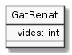

Propietats
Avui coneixeràs el gat Renat. Et presento la seva foto:
![@startuml
hide circle
skinparam monochrome true
skinparam classAttributeIconSize 0
class GatRenat {
+ vides: int
+ {static} main(String[])
}
@enduml](_images/plantuml-3134c3143312bf2fc1089d3d871e78a6bc8d7d04.png)
Segurament no era com te l'imaginaves, oi? Bé, es tracta d'un esquema gràfic que segueix la notació UML (Unified Modeling Languaje o Llenguatge de Modelització Unificat)
Al final d'aquesta pàgina et faig cinc cèntims més sobre aquesta notació, però ara la oblidarem per un moment, doncs estem apunt de conèixer el veritable gat Renat:
1public class GatRenat {
2 public int vides = 7; // vides disponibles del gat Renat
3 public static void main(String[] args) {
4 GatRenat renat; // declarem la referència al gat
5 renat = new GatRenat(); // creem la instància del gat Renat.
6 System.out.println("Al gat Renat li queden " + renat.vides + " vides");
7 }
8}
Val, potser tampoc no te l'imaginaves així. Però, què esperaves? Estem a un curs de programació!
Contesta les següents preguntes:
Quin ha de ser el nom del fitxer que contingui aquest codi perquè funcioni?
Quina és la sortida del programa?
A quina línia està declarada la variable
renatque apareix a la línia 6?A quina línia s'assigna el valor que es mostra per pantalla?
Quin valor apareix si a aquesta línia no s'assigna cap valor?
Què passaria sí la línia 5 no hi fos? Perquè creus?
Perquè creus que el comentari de la línia 4 parla de referència? Quina relació té amb el concepte de variable?
La línia 5 parla d'instància. En aquest context, una instància es pot entendre com el contingut real al que fa referència la variable
renat. Es diu que la instància es construeix amb l'operadornewi això implica bàsicament que es reserva espai de memòria per a allotjar tota la informació relativa a la instància.Descriu, respecte aquesta línia quina és la instància, quina la variable, quina la referència, quin el valor i quina la classe.
Pel que hem estudiat fins ara,
videspodria ser considerat una variable global dins de la classeGatRenatperò hi ha dues diferències respecte les variables globals que varem veure a Variables i mòduls. Sabries indicar quines?Ah, i no té a veure amb el
public. D'això ja en parlarem més tard.Vinga, t'ajudo amb una d'elles amb una pregunta: pots accedir a
videsdirectament des demain()sense posar-hi davantrenat?
 Exercici 34_01. Anotacions sobre les propietats
Exercici 34_01. Anotacions sobre les propietats
 Exercici 34_02. L'ascensor està al primer pis
Exercici 34_02. L'ascensor està al primer pis
Més sobre el diagrama UML
Aquesta notació gràfica correspon a un llenguatge anomenat UML (Unified Modeling Language o Llenguatge de Modelització Unificat). La farem servir sovint com a suport, ja que ens resultarà molt senzilla d'entendre i ens permetrà, d'una ullada, saber de què estem parlant.
Els diagrames UML són una mena d'esquema que representen els punts més significatius d'un programa.
Hi ha molts tipus de diagrama UML. Aquest en concret es diu diagrama de
classes perquè representa les classes del nostre programa. En aquest cas
només en tenim una (GatRenat) però hi podrien haver més.
En els diagrames de classes, les classes apareixen dins d'una caixa, normalment amb tres compartiments. El primer conté el nom de la classe, el segon conté les "variables" i el tercer conté els mòduls.
És important entendre que si apareix al diagrama, llavors tindrà representació al codi. En canvi, si no apareix al diagrama, simplement vol dir que qui ha fet el diagrama no ha considerat significatiu en aquest context.
Per exemple, el mètode main() sovint s'obvia, quedant el diagrama
així:

Si en vols saber més pots consultar la seva web oficial o algun dels innumerables recursos que hi ha publicats per la Web i en forma de llibres. Sí, es tracta d'una notació amb força història.